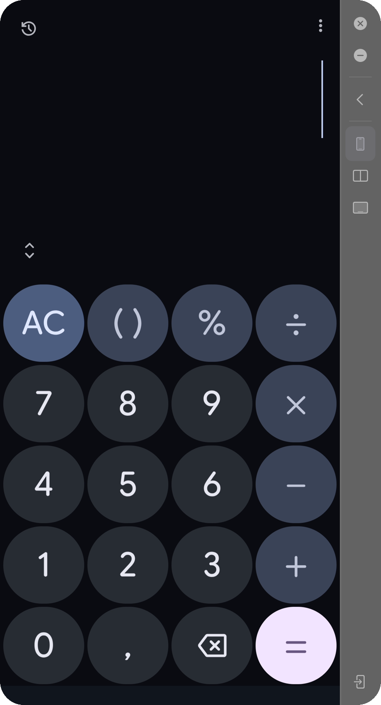
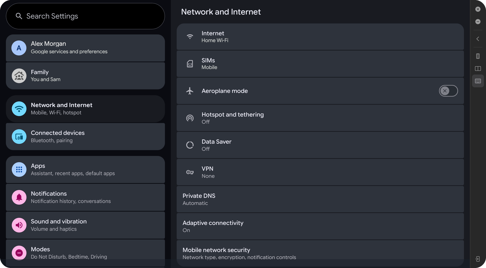
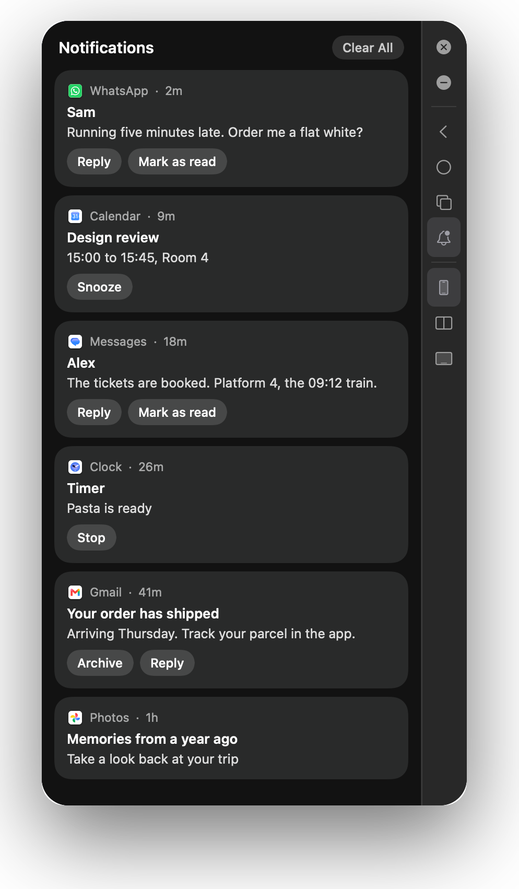

Your Android phone, on the near side of your computer.
Copy on one and paste on the other. Answer notifications and texts from your Mac or PC. Drop files either way. Open any phone app in its own window, with the phone still locked in your pocket.
Free and open source. macOS 14 or later, or Windows 11; Android 11 or later. No cloud, no account.

Every phone app, in its own window.
Not a mirror of your phone's screen. Each app gets a window of its own, next to your computer's apps: in the Dock and ⌘-Tab on a Mac, on the taskbar and in Alt+Tab on a PC. Close the window and the app is back on your phone, exactly where you left it.
- Trackpad, mouse and keyboard that feel native. Real flings, pinch, right-click, hover, and your own keyboard layout.
- Phone, foldable or tablet. Apps lay themselves out for each size, as they would on that device.
- Sound on your computer, per window, while the phone stays silent.
- A whole second phone, with its own home screen, Recents and notification panel.
- Find them like your own apps: Spotlight, Raycast, Alfred or ⌥⌘P on a Mac; the Start menu or Ctrl+Alt+N on a PC.



The everyday things, without reaching for your phone.

One clipboard
Copy on the phone, paste on your computer, and back. A searchable history in the panel (in the Mac's menu bar or the PC's notification area) puts any earlier clip on both clipboards again. Things your password manager marks as concealed are never kept.

Notifications you can act on
Your phone's notifications arrive as real macOS or Windows notifications, with their buttons and inline replies, and the panel lists what's on the phone now. Dismiss one on either device and it's gone on both, open it in a window right where it points, or mute them all for a few hours.
- Calls, on your computer
- Answer, decline or reply with a text when your phone rings, for phone calls and WhatsApp or Messenger alike. Talk through your computer, and move the call to the phone and back in one click.
- Your phone as a webcam
- Pick “Nearside Camera” in FaceTime, Teams, Zoom or a browser: the phone's back or front camera, upright however you hold it, and on only while an app uses it.
- Photos and screenshots
- The phone's newest photos in the panel: drag one out or click to open it. New screenshots can land on the other device by themselves.
- Phone status
- Battery, signal and network in the panel, and one heads-up when the battery runs low.
- Text messages
- Read and send SMS in a Messages window on your computer.
- Files, both ways
- Drop files on the panel, or use Send to computer in Android's share sheet. Drop them on an app's window to share straight into it.
- Wi-Fi or a cable
- Plug the phone in and Nearside moves to USB. Unplug and it carries on over Wi-Fi. Have a Mac and a PC? Connect moves the phone between them.
- Leaves your phone alone
- Keep using the phone and its keyboard while its apps are open on your computer.
Between your two devices, and nowhere else.
Nearside's Mac or Windows app starts a small helper on your phone over Android's wireless debugging, the technique scrcpy and Shizuku use. No root, and no server in the middle.

Pinned to your phone. Pairing authenticates your phone's key, and every connection checks it. A look-alike device is refused.
Proven both ways. Your computer and the helper prove they share a secret of that computer's without ever sending it.
Touch ID or Windows Hello first. Phone apps work while the phone is locked, so your computer asks before showing them.
Where it's tested.
Every feature is tested on one setup: a Google Pixel 9 Pro on Android 17 beta with a MacBook Air (Apple M5) on macOS 27, over Wi-Fi and USB. Nearside needs Android 11 or later and macOS 14 or later; other phones, older versions and Intel Macs haven't been tested yet. The Windows 11 app is new: so far it's tested in a virtual machine, and real-PC results are on the way.
- Clipboard, both waysTested
- Notifications, with buttons and repliesTested
- Text messages (SMS)Tested
- Files, both waysTested
- Phone apps in windows, with soundTested
- Your computer's microphone in app windowsTested
- Phone statusTested
- Photos and screenshotsTested
- Incoming calls: answer, decline, replyTested
- Phone calls through the computerTestedUses the in-call audio paths Pixel's Call Screen uses
- Phone camera as a webcamTestedMac release builds only
- Wi-Fi and USB cableTested
The list is for the Mac. Tried it on another phone, Mac or a PC? Tell us how it went, whether it worked or not.
Keep it free and getting better.
Nearside has no ads, no accounts and no paid tier. If it makes your phone and your computer feel like they belong together, you can help keep it going.
A bug report from a phone other than a Pixel helps just as much. Open an issue.